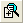
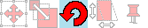
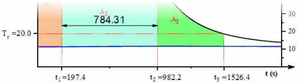
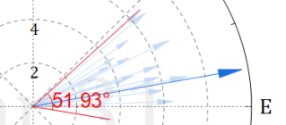

Grafische Untersuchung der Daten
Origin umfasst eine Anzahl von Hilfsmitteln für die grafische Untersuchung Ihrer Daten. Dies schließt die Hilfsmittel zum Zoomen und Schwenken von Datenzeichnungen, zum Ablesen von XY-Koordinatenwerten und anderen Metadaten Ihrer Datenpunkte oder zum Markieren bzw. Maskieren von ausgewählten Datenpunkten ein.
Zeichnungen markieren
Die Markieren von Zeichnungen kann verwendet werden, um einen Teilbereich der Daten für eine tiefergehendere Analyse auszuwählen. Grundsätzlich ist sie aber auch nützlich, um schnell visuelle Vergleiche anstellen zu können.
Zeichnungsmarkierung einbeziehen:
- Klicken Sie auf eine Zeichnung im Diagrammlayer. Weitere Zeichnungen im Layer und in verknüpften Layern, die die gleiche X-Achse teilen, werden abgeblendet.
- Klicken Sie auf die Zeichnung in der Objektverwaltung.
- Um Zeichnungen hervorzuheben/abzublenden, indem Sie die Maus über sie bewegen (ohne zu klicken), klicken Sie auf die Schaltfläche Zeichnung durch Bewegen der Maus hervorheben auf der Minisymbolleiste (Seitenebene).
Weitere Origin-Funktionen, die nützlich bei der schnellen visuellen Untersuchung der Datenzeichnungen sind:
- Wenn Sie viele Spalten mit Y-Daten haben, kann das Zeichnen eines Browserdiagramms oder das Hinzufügen eines Browserfelds zu einem existierenden 2D-Liniendiagramms sehr nützlich sein für eine schnelle visuelle Untersuchung. Über das Menü des Browserfelds können Sie jede N-te Spalte zeichnen oder die Zeichnungen mit Hilfe eines Faktors festgelegt unter Verschieben um durchblättern.
- Für Punktdaten verwenden Sie den benutzerdefinierbaren Tooltipp der Datenpunkte, um die Koordinatenwerte und Spaltenmetadaten durch Mausbewegung abzulesen.
- Sie können auch die Schaltflächen der Symbolleiste Hilfsmittel verwenden, um Ihr Diagramm zu zoomen oder zu schwenken, wie Sie im nächsten Abschnitt sehen werden.
- Origin hat verschiedene andere Hilfsmittel für eine visuelle Untersuchung und Aufzeichnung der Informationen in Ihren Datenzeichnungen. Diese werden in den restlichen Teilabschnitten dieses Kapitels besprochen.
Datenschnitte
Wenn Sie Arbeitsblattdaten zeichnen, auf die ein Datenfilter angewendet wurde, können Sie ein Bedienfeld namens Datenschnitte aktivieren, in dem Sie die Filterbedingungen schnell ändern und die Wirkung auf Ihre Zeichnung sehen können. Das Hilfsmittel soll zum Zeichnen und Vergleichen von einzelnen Kategorien dienen.
- Wenn Sie einen oder mehrere Filter auf Ihre Arbeitsblattdaten an und erstellen Sie Ihre Zeichnung.
- Fahren Sie mit der Maus ein kleines Stück in das Diagrammfenster, aber noch außerhalb des Layers. Wenn Sie den Cursor der Minisymbolleiste sehen, klicken Sie und suchen Sie nach der Schaltfläche Datenschnitte.
- Wenn das Bedienfeld der Datenschnitte aktiviert ist, klicken Sie mit der rechten Maustaste auf die Titelleiste von Arbeitsblatt und Diagramm und wählen für beide Fenster die Option Duplizieren. Das Duplizieren der zwei Fenster macht die Vergleiche nebeneinander möglich.
- Im linken Bedienfeld des duplizierten Diagramms klicken Sie auf die gelisteten Filter und wählen Sie eine andere Kategorie in der Auswahlliste.
Zoomen, Schwenken und Neuskalieren
Diagramme, vergrößernDiagramme vergrößern Diagramme, zoomenDiagramme zoomen Diagramme, schwenkenDiagramme schwenken Diagramme, neu skalierenDiagramme neu skalieren
Dieser Abschnitt erläutert die Verwendung der Hilfsmittel auf Symbolleisten sowie Tastatur- und Menübefehle, die die Ansicht des 2D-Diagramms ändern. Wir haben diese Hilfsmittel und Befehle in zwei Gruppen aufgeteilt:
- Zoom- und Schwenkoperationen auf Seitenebene, die Achsenskalierungen nicht ändern.
- Achsenskalierungssoperationen, die das Diagramm zoomen und schwenken, indem Sie die Werte Von und Bis der Achse ändern.
Zoomen und Schwenken auf Seitenebene
| Aktion |
Schaltfläche |
Tastenkombination |
Menü |
Notizen |
| Zoomen-Schwenken: Zoomen und Schwenken der Diagrammseite |
 |
A +
+/--Tasten (Zoomen)
oder
Pfeiltasten (Schwenken) |
|
Klicken Sie auf die Symbolleistenschaltfläche oder positionieren Sie den Cursor bei aktivem Hilfsmittel Zeiger  auf der Diagrammseite und drücken Sie "A", dann ... auf der Diagrammseite und drücken Sie "A", dann ...- verwenden Sie die +/--Tasten oder das Mausrad zum Vergrößern/Verkleinern per Zoom,
- verwenden Sie die Pfeiltasten, um horizontal oder vertikal zu schwenken.
|
| Gestuftes Zoomen-Schwenken†: Diagramm nach Inkrement vergrößern und verkleinern |

 |
Strg + I
Strg + M |
Ansicht: Vergrößern und Ansicht: Verkleinern. |
- Gestuftes Zoomen
- Strg +I aktiviert das Vergrößern; durch Klicken auf das Diagramm wird der Fokalpunkt gesetzt.
- Strg +M verkleinert; es ist kein Klicken auf das Diagramm erforderlich.
|
| Ganze Seite: Die gesamte Diagrammseite zeigen |
 |
Strg + W
|
Ansicht: Ganze Seite |
- Die Ansicht der Seite wird nach Verwendung der Hilfsmittel zum Zoomen-Schwenken zurückgesetzt.
|
| Alle zoomen: Alle Objekte im Fenster werden gezeigt. |
-- |
-- |
Ansicht: Alle zoomen |
- Kann verwendet werden, um "verlorene" Objekte zu finden, die außerhalb der Diagrammseite liegen.
|
†Hinweise:Es handelt sich um ältere Hilfsmittel und die Methoden sind veraltet. Symbolleistenschaltflächen werden standardmäßig nicht gezeigt. Verwenden Sie den Dialog Anpassen (Ansicht: Symbolleisten > Diagramme), um sie zu Arbeitsbereich hinzuzufügen.
Neuskalierung der Achsen
| Aktion |
Schaltfläche |
Tastenkombination |
Menü |
Notizen |
| Neu skalieren: Diagramm sowohl in X- als auch in Y-Dimension neu skalieren und schwenken |
 |
Drücken Sie Z und die rechte Maustaste und ziehen Sie vertikal (in Y-Richtung skalieren) oder horizontal (in X-Richtung skalieren). |
-- |
- Verwenden Sie das Mausrad, um X neu zu skalieren.
- SHIFT + Scrollen, um Y neu zu skalieren
- Ziehen Sie mit der linken Maustaste, um zu schwenken (skaliert sowohl X als auch Y).
- Wählen Sie das Hilfsmittel Zeiger, um den Modus Neu skalieren zu verlassen.
|
| Diagramm in der X-Dimension neu skalieren |
-- |
Z + Scrollrad
oder die Tasten
Z + +/-
|
-- |
- Diagramm in der X-Dimension ohne Grenzen neu skalieren
|
| Diagramm in der X-Dimension schwenken |
-- |
X + Scrollrad
oder die Tasten
X + +/-
|
-- |
- Skaliert X neu.
- Skaliert Y nicht neu.
|
| X neu skalieren: Diagramm in der X-Dimension neu skalieren |
 |
-- |
-- |
- Skaliert X auf den gesamten X-Bereich (Zurücksetzen) + ein Füllfaktor.
|
| Diagramm in der Y-Dimension neu skalieren |
-- |
Shift + Z + Scrollrad
oder die Tasten
Shift + Z + +/-
|
-- |
- Skaliert das Diagramm in der X-Dimension ohne Grenzen neu.
|
| Diagramm in der Y-Dimension schwenken |
-- |
Shift + X + Scrollrad
oder
die Tasten Shift + X + +/-
|
-- |
- Skaliert Y neu.
- Skaliert X nicht neu.
|
| Y neu skalieren: Diagramm in der Y-Dimension neu skalieren |
 |
-- |
-- |
- Skaliert Y auf den gesamten Y-Bereich (Zurücksetzen) + ein Füllfaktor.
|
| XY neu skalieren: Diagramm sowohl in X- als auch in Y-Dimension neu skalieren |
 |
--
|
-- |
- Skaliert X und Y auf den gesamten Bereich (Zurücksetzen) + ein Füllfaktor.
|
| Z neu skalieren: Diagramm in der Z-Dimension neu skalieren |
 |
--
|
-- |
- Skaliert Z auf den gesamten Bereich (Zurücksetzen) + ein Füllfaktor.
|
| Achsenskalierung vergrößern/Achsenskalierung verkleinern: Diagramm in X- und Y-Dimensionen neu skalieren |
 and and  |
-- |
-- |
- Wählen Sie Achsenskalierung vergrößern und ziehen Sie dann ein Rechteck auf, um den Achsenskalierungsbereich zu definieren.
- Setzen Sie durch mehrmaliges Klicken auf die Schaltfläche Achsenskalierung verkleinern (Ziehen nicht erforderlich) die Vergrößerung zurück.
- Sowohl X als auch Y werden neu skaliert.
- Drücken Sie die ESC-Taste (oder wählen Sie ein anderes Hilfsmittel), um den Vergrößerungsmodus zu verlassen.
- Drücken Sie bei aktiver Grafik die Strg-Taste und klicken Sie dann auf die Schaltfläche Achsenskalierung vergrößern
 . Ziehen Sie auf Ihrem 2D-Diagramm ein Rechteck auf, um den vergrößerten Abschnitt in ein neues Fenster zu kopieren. Beachten Sie, dass dieses vergrößerte Diagramm dynamisch ist. Verschieben Sie das Rechteck auf Ihrem ursprünglichen Diagramm oder verändern Sie seine Größe. Das vergrößerte Diagramm wird mit aktualisiert. Dies funktioniert auch für Grafiken, die mehrere verknüpfte Layer haben, solange die Layer sich überschneiden und eine gemeinsame Achse teilen (für % des verknüpften Layers ist Links/Oben auf 0 gesetzt und Breite/Höhe ist auf 100 gesetzt plus Gerade (1 zu 1) ist mit dem Hauptlayer verknüpft). . Ziehen Sie auf Ihrem 2D-Diagramm ein Rechteck auf, um den vergrößerten Abschnitt in ein neues Fenster zu kopieren. Beachten Sie, dass dieses vergrößerte Diagramm dynamisch ist. Verschieben Sie das Rechteck auf Ihrem ursprünglichen Diagramm oder verändern Sie seine Größe. Das vergrößerte Diagramm wird mit aktualisiert. Dies funktioniert auch für Grafiken, die mehrere verknüpfte Layer haben, solange die Layer sich überschneiden und eine gemeinsame Achse teilen (für % des verknüpften Layers ist Links/Oben auf 0 gesetzt und Breite/Höhe ist auf 100 gesetzt plus Gerade (1 zu 1) ist mit dem Hauptlayer verknüpft).
|
| Neu skalieren: Diagramm in jeder Dimension neu skalieren |
 |
Strg + R |
Grafik: Neu skalieren |
- Skaliert alle Achsen neu (Zurücksetzen), um alle Daten im Layer (+ ein Füllfaktor) anzuzeigen.
|
| 3D-Diagramme |
| Skalieren Sie in der X-Dimension neu. |
-- |
Z + Scrollrad |
-- |
Wenn sich die Zeichnung über den 3D-Rahmen hinaus erstreckt, gehen Sie zum Dialog Details Zeichnung > Registerkarte Sonstiges (Layerebene) und legen Sie die Bedienelemente unter Abschneiden fest. |
| Skalieren Sie in der Y-Dimension neu. |
-- |
Shift + Z + Scrollrad |
-- |
| Skalieren Sie in der Z-Dimension neu. |
-- |
D + Scrollrad |
-- |
 | - Wenn Sie eine Symbolleistenschaltfläche nicht sehen, kann es sein, dass sie deaktiviert ist. Zum Hinzufügen oder Entfernen von Schaltflächen zu bzw. aus einer Symbolleiste lesen Sie bitte Der Dialog Symbolleisten anpassen.
- Um eine Achse daran zu hindern, neu skaliert zu werden, wenn eines der Hilfsmittel zur Neuskalierung der Achsen verwendet wird, setzen Sie Neuskalieren = Festgelegt. Wenn beide Achsen, X und Y, auf Festgelegt und Sie eines dieser Neuskalierungshilfsmittel für Achsen auswählen, werden Sie daran erinnert, dass X- und Y-Achsen sich im "Modus der manuellen Neuskalierung" befinden und zum Fortfahren angestoßen werden müssen. Wenn Sie mit Ja antworten, können Sie die Einstellung aufheben und in eine oder beide Dimensionen manuell neu skalieren. Wenn Sie diese manuellen Aufhebungen der festgelegten Achsenskalierungen blockieren möchten, setzen Sie @nrm = 1.
|
3D-OpenGL-Diagramm drehen
 | Diese openGL-Symbolleiste, die zuvor angezeigt wurde, wenn ein 3D-Layer ausgewählt war, wurde durch Schaltflächen einer Minisymbolleiste auf Layerebene ersetzt.
- 
|
Wenn Sie innerhalb des Layers eines 3D-Diagramms klicken, wird das Layer ausgewählt und eine Minisymbolleiste angezeigt. Klicken Sie auf die Schaltfläche Drehmodus, um den Drehmodus zu öffnen. Verwenden Sie dann eine der untenstehenden Tasten-/Mauskombinationen oder ziehen Sie mit der Maus an den Elementen der radialen Drehung im Diagramm.
| Tastenkombination |
Menü/Operation |
Kontext |
| 3D-Diagramme mit den frei beweglichen 3D-Schaltflächen drehen |
| X + Pfeiltaste |
Das 3D-Diagramm wird um die X-Achse gedreht. |
Bei aktivem Diagrammlayer und ausgewählter Schaltfläche Drehmodus in der Gruppe der frei beweglichen 3D-Schaltflächen.
|
| Y + Pfeiltaste |
Das 3D-Diagramm wird um die Y-Achse gedreht. |
| Z + Pfeiltaste |
Das 3D-Diagramm wird um die Z-Achse gedreht. |
| Q + Pfeiltaste |
Das 3D-Diagramm wird auf Bildschirmebene gedreht. |
| W + Pfeiltaste |
Das 3D-Diagramm wird um eine beliebige Achse gedreht. |
| 3D-Diagramme mit der R-Taste drehen |
| R + Maus |
Ziehen Sie am 3D-Diagramm in eine beliebige Richtung, um es zu drehen. |
Drücken Sie "R", bevor Sie andere Tasten drücken.
Wenn Sie mit dem Cursor über ein 3D-Diagramm fahren, während Sie "R" drücken, verwandelt sich das Hilfsmittel Zeiger in  . Drücken Sie, je nachdem, die Strg- und/oder die Shift-Taste und drehen Sie, indem Sie (a) an Ihrer Maus ziehen oder (b) die Pfeiltasten auf Ihrer Tastatur benutzen. . Drücken Sie, je nachdem, die Strg- und/oder die Shift-Taste und drehen Sie, indem Sie (a) an Ihrer Maus ziehen oder (b) die Pfeiltasten auf Ihrer Tastatur benutzen. |
| R + Strg + Maus/Pfeiltaste |
Das 3D-Diagramm wird um die X-Achse gedreht. |
| R + Shift + Maus/Pfeiltaste |
Das 3D-Diagramm wird um die Y-Achse gedreht. |
| R + Strg + Shift + Maus/Pfeiltaste |
Das 3D-Diagramm wird um die Z-Achse gedreht. |
Koordinatenwerte und Abstände ablesen
Diagramme, Koordinatenwerte ablesen Origin bietet mehrere Hilfsmittel zur Beschriftung und grafischen Untersuchung Ihrer Datenzeichnungen. Diese Hilfsmittel stehen über die Symbolleiste Hilfsmittel zur Verfügung (Ansicht: Symbolleisten). Im Menü Minitools ist ein verwandtes Hilfsmittel verfügbar -- der Vertikale Cursor.
Tooltipp für Datenpunkte
Die meisten 2D-Diagrammtypen, 3D-Punkt-. XYY-Balken- und XYZ-Balkendiagramme unterstützen einen frei beweglichen, benutzerdefinierbaren Tooltipp, der die Datenpunktwerte abliest, wenn Sie mit der Maus über einen Datenpunkt fahren.
Kontextmenü des Tooltipps
Um Tooltipps benutzerdefiniert anzupassen und andere Optionen zu sehen, klicken Sie mit der rechten Maustaste direkt auf den Tooltipp für Datenpunkte.

- Zu Arbeitsblatt gehen zeigt das Arbeitsblatt mit markierten Quelldaten an.
- Tooltipp für Datenzeichnung zeigen wechselt zwischen der Anzeige eines nicht benutzerdefinierbaren Tooltipps für die Datenzeichnung und des benutzerdefinierbaren Tooltipp der Datenpunkte (siehe unten).
- Datenpunkte auswählen versetzt den Cursor in den Datenlesemodus und öffnet den Dialog Punkte auswählen. Klicken Sie doppelt auf Punkte im Diagramm und, wenn Sie fertig sind, klicken Sie auf Fertig. Dadurch werden Zusammenfassungsdaten (Quelle, X-Y-Koordinaten etc.) für Ihre ausgewählten Punkte erzeugt.
- Kopieren kopiert die Tooltippinformationen des Datenpunkts, einschließlich Beschriftungen, in die Zwischenablage.
- Koordinaten kopieren kopiert nur die Koordinatenwerte. Klicken Sie mit der rechten Maustaste auf eine Zelle und fügen Sie per Einfügen jeden Wert in eine separate Zelle innerhalb der Zeile ein oder wählen Sie Einfügen (Leerzeichen beibehalten), um Werte als eine durch Leerzeichen getrennte Zeichenkette in die ausgewählte Zelle einzufügen.
- Einstellungen öffnet den Dialog Tooltipp für Datenpunkte, über den Sie den Inhalt und die Formatierung der Tooltipps benutzerdefiniert anpassen können. Verwenden Sie die Dokumentation des Dateninfofensters unten als ein Handbuch zum Konfigurieren Ihres Tooltipps.
Der Dialog Tooltipp für Datenpunkte ist eine etwas einfachere Version des Einstellungsdialog für das Dateninfofenster (Einstellungen des Dateninfoberichts). Siehe Das Fenster Dateninfo, um Hilfe zum benutzerdefinierten Anpassen Ihres Tooltipps für Datenpunkte zu erhalten.
| Standard ist, dass der Tooltipp der Datenpunkte mit einer mittleren Transparenz angezeigt wird. Sie können die Transparenz des Tooltipps beeinflussen, indem Sie den Wert der LabTalk-Systemvariablen @TDT ändern. Eine Anleitung, wie Sie den Wert einer LabTalk-Systemvariablen ändern, finden Sie in dieser FAQ. |
Tooltipp für Datenzeichnung
Es gibt einen zweiten Tooltipp, der anstelle des Tooltipps für Datenpunkte gezeigt werden kann. Dieser wird als Tooltipp der Datenzeichnung bezeichnet. Dieser nicht benutzerdefinierbare Tooltipp zeigt die Quellmappe, das Arbeitsblatt und den Koordinatensatz an, indem Sie die Maus entsprechend bewegen.
Der Tooltipp der Datenpunkte wird standardmäßig angezeigt. Wenn Sie die Verwendung des Tooltipps der Datenzeichnung vorziehen, klicken Sie mit der rechten Maustaste auf den Tooltipp des Datenpunkts und wählen Sie Tooltipp der Datenzeichnung zeigen. Umgekehrt klicken Sie mit der rechten Maustaste auf den Tooltipp der Datenzeichnung und wählen Sie Tooltipp der Datenpunkte zeigen.
Anzeige der Tooltipps verwalten
Sie können die Anzeige der Datentooltipps ausschalten, indem Sie das Diagrammfenster aktivieren, im Menü auf Ansicht klicken und das Häkchen neben Tooltipps der Daten entfernen.
Es gibt eine zweite Möglichkeit, die Anzeige der Tooltipp festzulegen, die zwar komplizierter ist, dafür aber einen umfangreichere Einstellungen zulässt. Dies schließt die Änderung der Werte der LabTalk-Systemvariablen @PT und @PTI ein.
@PT=0; //Disable both data plot and data point tooltips @PT=1; //Enable data plot tooltips for 2D graph @PT=2; //Enable data plot tooltips for 3D OpenGL graph (default) @PT=3; //Enable data plot tooltips for both 2D graph and 3D OpenGL graph @PTI=0; //Disable only data point tooltips @PTI=1; //Enable data point tooltips (default)
Das Hilfsmittel Anmerkung
Anmerkungshilfsmittel Das Hilfsmittel Anmerkung teilt sich eine Schaltfläche mit den Hilfsmitteln Distanzanmerkung und Winkelanmerkung.
Das Hilfsmittel Anmerkung wird verwendet, um einen Datenpunkt zu beschriften. Das Hilfsmittel kann mit den meisten Punkt-Linien- und Symboldiagrammen sowie Säulen-Balkendiagrammen verwendet werden. Wählen Sie mehrere Standardbeschriftungen für Datenpunkte oder erstellen Sie Ihre eigene benutzerdefinierte Beschriftung mit Hilfe von LabTalk-Skript.
Um eine Anmerkung zu einem Datenpunkt hinzuzufügen:
- Klicken Sie auf die Schaltfläche Anmerkung
 auf der Symbolleiste Hilfsmittel und verschieben Sie den Cursor zu dem gewünschten Datenpunkt. Der Cursor und die Statusleiste zeigen das aktuelle Beschriftungsformat an.
auf der Symbolleiste Hilfsmittel und verschieben Sie den Cursor zu dem gewünschten Datenpunkt. Der Cursor und die Statusleiste zeigen das aktuelle Beschriftungsformat an.
- Verwenden Sie die Tab-Taste, um zwischen den folgenden Standardformaten für Anmerkungen zu wechseln: (X-Koordinatenwert, Y-Koordinatenwert), (X-Koordinatenwert, Y-Koordinatenwert)[Indexnummer], X-Koordinatenwert, Y-Koordinatenwert, Indexnummer (Zeilennummer) oder Benutzerdefiniert (siehe nächstes Tutorial).
- Wenn Sie Ihr Beschriftungsformat ausgewählt haben, klicken Sie doppelt, um eine Beschriftung zum Datenpunkt hinzuzufügen, oder klicken Sie einmal auf den Punkt und drücken Sie Enter.
 |
Tutorial: Zeichenkette der Anmerkung benutzerdefiniert anpassen Die Zeichenkette der Anmerkung kann benutzerdefiniert angepasst werden, indem Buchstaben mit den X- und Y-Koordinatenwerten kombiniert werden:
- Beginnen Sie mit einem Diagramm Ihrer Daten.
- Öffnen Sie das Skriptfenster (Fenster: Skriptfenster), geben Sie folgenden Befehl ein und drücken Sie dann Enter:
system.annotation.customlabel$="X value: $(x,.2), Y value: $(y,*5)
- Klicken Sie auf die Schaltfläche Anmerkung , fahren Sie mit der Maus über Ihr Diagramm und drücken Sie dann mehrmals die Tab-Taste, um die Auswahl der Anmerkungen durchzugehen, bis das oben festgelegte benutzerdefinierte Zeichenkettenformat in der Statusleiste angezeigt wird. Der Cursor zeigt das Wort "Benutzerdefiniert (Custom)" an.
- Beginnen Sie mit einem Doppelklick auf die Datenpunkte (oder einen Einzelklick und Enter), um die benutzerdefinierte Zeichenkette der Anmerkung hinzuzufügen. Die X-Werte werden mit zwei Dezimalstellen und die Y-Werte mit 5 signifikanten Stellen angezeigt, wie in Ihrem Skript angegeben.
|
Anpassungen mit dem Hilfsmittel Zeiger:
- Um eine Beschriftung zu einem anderen Datenpunkt zu verschieben, klicken Sie auf das Hilfsmittel Zeiger , drücken Sie die ALT-Taste und ziehen Sie an der Beschriftung.
- Um sich überschneidende Beschriftungen neu zu positionieren, ziehen Sie an der Beschriftung. Eine Verbindungslinie wird automatisch hinzugefügt.
- Um eine Beschriftung für einen anderen Datenpunkt zu kopieren, drücken Sie Strg + Shift und ziehen Sie die Beschriftung zu einem neuen Datenpunkt.
| Hinweis: Weitere Informationen zu der Formatierung der Zeichenketten finden Sie in der Hilfe zur Programmierung: Hilfe: Programmierung: LabTalk > Language Reference > Object Reference > Alphabetical Listing of Objects > String
|
Das Hilfsmittel Bildschirmkoordinaten
Die Bildschirmkoordinaten  arbeiten mit dem Fenster Datenanzeige zusammen, um die XY(Z)-Koordinaten des Cursors auf der Diagrammseite anzuzeigen. Beachten Sie, dass das Hilfsmittel Datenkoordinaten nicht die Datenpunktkoordinaten liest; vielmehr liest es die Seitenkoordinaten in Relation zu den Diagrammachsen.
arbeiten mit dem Fenster Datenanzeige zusammen, um die XY(Z)-Koordinaten des Cursors auf der Diagrammseite anzuzeigen. Beachten Sie, dass das Hilfsmittel Datenkoordinaten nicht die Datenpunktkoordinaten liest; vielmehr liest es die Seitenkoordinaten in Relation zu den Diagrammachsen.
Das Fenster Datenanzeige öffnet sich automatisch, wenn Sie das Hilfsmittel Bildschirmkoordinaten auf der Symbolleiste Hilfsmittel aktivieren (standardmäßig ist das Fenster Datenanzeige unten in Ihrem Origin-Arbeitsbereich befestigt).
Sie können einige grundlegende Eigenschaften des Fensters Datenanzeige ändern, indem Sie mit der rechten Maustaste auf die Fenstertitelleiste oder in das Fenster selbst klicken.
Um die Bildschirmkoordinaten zu verwenden:
- Klicken Sie auf die Schaltfläche Bildschirmkoordinaten in der Symbolleiste Hilfsmittel. Dadurch wird das Hilfsmittel Datenanzeige aufgerufen.
- Klicken Sie auf eine Position in der Diagrammseite, um deren X-,Y- und Z-Koordinaten (nur bei Ternär und Kontur) auszulesen. Die Koordinatenwerte werden im Fenster Datenanzeige angezeigt.
- Zum Vergrößern des Fadenkreuzes drücken Sie die Leertaste.
- Klicken Sie auf die Schaltfläche Zeiger auf der Symbolleiste Hilfsmittel, um den Modus der Bildschirmkoordinaten zu verlassen.
Das Hilfsmittel Datenkoordinaten
Verwenden Sie das Hilfsmittel Datenkoordinaten  , um Informationen, die mit einem Datenpunkt in Ihrer Zeichnung verbunden sind, zu lesen. Dies können Koordinatenwerte sein oder komplexere Informationen, einschließlich Metadaten oder sogar Bilder, die sich auf den Datenpunkt beziehen. Das Hilfsmittel Datenkoordinaten arbeitet mit dem anpassbaren Fenster Dateninfo zusammen.
, um Informationen, die mit einem Datenpunkt in Ihrer Zeichnung verbunden sind, zu lesen. Dies können Koordinatenwerte sein oder komplexere Informationen, einschließlich Metadaten oder sogar Bilder, die sich auf den Datenpunkt beziehen. Das Hilfsmittel Datenkoordinaten arbeitet mit dem anpassbaren Fenster Dateninfo zusammen.
Das Hilfsmittel Datenkoordinaten ist mit zwei verwandten Hilfsmittel gruppiert -- dem Datencursor  und dem Datenmarkierer
und dem Datenmarkierer  . Nur eine dieser Symbolleistenschaltflächen ist zeitgleich zu sehen. Um ein ausgeblendetes Hilfsmittel zu verwenden, klicken Sie auf den kleinen Pfeil in der Ecke rechts von der Schaltfläche und wählen Sie ein Hilfsmittel aus dem Ausklappmenü aus.
. Nur eine dieser Symbolleistenschaltflächen ist zeitgleich zu sehen. Um ein ausgeblendetes Hilfsmittel zu verwenden, klicken Sie auf den kleinen Pfeil in der Ecke rechts von der Schaltfläche und wählen Sie ein Hilfsmittel aus dem Ausklappmenü aus.
| Sie können in das Diagramm hineinzoomen, während Sie die Option Datenkoordinaten verwenden. Während das Hilfsmittel aktiv ist, drücken Sie die Strg-Taste und verwenden Sie Ihr Mausrad zum Vergrößern oder Verkleinern der Seite. |
- Klicken Sie auf die Schaltfläche Datenkoordinaten in der Symbolleiste Hilfsmittel. Das Fenster Dateninfo wird geöffnet.
- Klicken Sie auf einen Datenpunkt, um dessen X- und Y- (sowie ggf. Z-) Koordinaten auszulesen. Die Koordinatenwerte werden im Fenster Dateninfo (und Datenanzeige) angezeigt.
- Um das Fadenkreuz zum nächsten Datenpunkt entlang der Datenzeichnung zu verschieben, können Sie die Tasten Pfeil-nach-links und Pfeil-nach-rechts auf Ihrer Tastatur benutzen oder mit Ihrer Maus auf den Datenpunkt klicken. Wenn sich mehrere Zeichnungen in einem Layer befinden, verwenden Sie die Nach-oben- und Nach-unten-Pfeiltasten, um zu einem Datenpunkt auf einer anderen Zeichnung zu gelangen oder klicken Sie mit der Maus auf ihn.
- Um die vertikale und horizontale Größe des Fadenkreuzes zu verändern, klicken Sie auf einen Punkt und drücken Sie die Leertaste.
- Klicken Sie auf die Schaltfläche Zeiger auf der Symbolleiste Hilfsmittel oder drücken Sie die Esc-Taste, um das Hilfsmittel Datenkoordinaten zu verlassen.
| Es gibt eine Anzahl von Systemvariablen, die die Beschleunigung der Pfeiltaste und das Dateninkrement für die Datenkoordinaten steuern. Weitere Informationen finden Sie in der Zusammenfassungstabelle unter Werte der Koordinaten im Diagramm lesen. |
Das Hilfsmittel Datencursor
Hilfsmittel Datencursor Diagramme, Abstand zwischen zwei Punkten Das Hilfsmittel Datencursor -- auf der Symbolleiste Hilfsmittel mit Datenkoordinaten gruppiert -- lässt zu, dass ein oder mehr Cursor auf einer Datenzeichnung positioniert werden. Es liest (mit Hilfe des Fensters Dateninfo) die Cursorkoordinaten ab oder misst den X- und Y-Abstand zwischen zwei Cursor oder den Abstand zwischen einem Cursor und einem mit Datenkoordinaten ausgewählten Punkt.
|
Tutorial: Mit dem Hilfsmittel Datencursor relative Distanzen messen
- Importieren Sie die Datei Samples\Spectroscopy\Sample Pulses.dat und erstellen Sie ein Liniendiagramm.
- Klicken Sie auf die Schaltfläche Datencursor auf der Symbolleiste Hilfsmittel.
- Klicken Sie doppelt auf einen der Peaks oder klicken Sie einmal auf einen Datenpunkt und drücken Sie ENTER, um ein Cursorobjekt hinzuzufügen.
- Wiederholen Sie diese Schritte, um ein zweites Cursorobjekt auf einem weiteren Peak zu platzieren.
- Klicken Sie doppelt in das Fenster Dateninfo, um den Dialog Einstellungen des Dateninfoberichts zu öffnen. Wenn dieses Fenster nicht sichtbar ist, wählen Sie im Menü Ansicht: Dateninformationen zeigen, um das Fenster Dateninfo aufzurufen.
- Wechseln Sie zur Registerkarte Spalten, klicken Sie dann mit der rechten Maustaste in den grauen Bereich rechts von den Spalten und wählen Sie Spalte hinzufügen.
- Klicken Sie in der neu hinzugefügten Spalte auf die Quellzeile der neuen Spalte und wählen Sie Relativ (Cursor2 - Cursor1) in der Auswahlliste. Klicken Sie dann auf OK, um den Dialog zu schließen.
- Jetzt können Sie die Cursorobjekte durch einfaches Ziehen verschieben, und die dritte Spalte im Fenster Dateninfo zeigt die X- und Y-Abstände zwischen den beiden Cursorn an.
|
Das Hilfsmittel Distanzanmerkung
Das Hilfsmittel Distanzanmerkung teilt sich eine Schaltfläche auf der Symbolleiste Hilfsmittel mit den Hilfsmitteln Anmerkung und Winkelanmerkung.

Verwenden Sie das Hilfsmittel Distanzanmerkung zum Zeichnen eines Pfeils mit Doppelspitze und Beschriftung der Skalierung zwischen zwei Punkten auf einem 2D-Diagramm.
- 
- Klicken Sie auf die Schaltfläche Distanzanmerkung auf der Symbolleiste Hilfsmittel.
- Platzieren Sie im Diagramm das Fadenkreuz auf dem Startpunkt und ziehen Sie an Ihrer Maus. Drücken Sie die Shift-Taste, um den Doppelpfeil horizontal oder vertikal zu verschieben.
- Um die Positionierung des Pfeils fein einzustellen, klicken Sie mit der rechten Maustaste auf den gezeichneten Pfeil und wählen Sie Eigenschaften. Verwenden Sie die Registerkarte Dimensionen, um die genaue Platzierung des Objekts zu steuern.
Das Hilfsmittel Winkelanmerkung
Das Hilfsmittel Winkelanmerkung  teilt sich eine Schaltfläche auf der Symbolleiste Hilfsmittel mit den Hilfsmitteln Anmerkung und Distanzanmerkung.
teilt sich eine Schaltfläche auf der Symbolleiste Hilfsmittel mit den Hilfsmitteln Anmerkung und Distanzanmerkung.
Verwenden Sie das Hilfsmittel Winkelanmerkung zum Zeichnen und Beschriften eines Innenwinkels < 180 Grad.
- 
Das Hilfsmittel Datenmarkierer
Der Datenmarkierer ist auf der Symbolleiste Hilfsmittel mit den Hilfsmitteln Datenkoordinaten und Datencursor gruppiert. Verwenden Sie den Datenmarkierer, um einen oder mehr Punkte in Ihrem Diagramm auszuwählen und gleichzeitig die entsprechende Datenzeile im Arbeitsblatt zu markieren. Nicht ausgewählte Punkte werden im Diagramm und Arbeitsblatt gedimmt.
Während der Modus Datenmarkierer aktiv ist ...
- Strg+Klick zum Auswählen von mehreren Punkten im Diagramm.
- Ziehen Sie ein Rechteck/Freihandobjekt auf dem Diagramm auf, um mehrere Punkte auszuwählen.
- Verwenden Sie die Leertaste, um zwischen den Auswahlmodi Rechteck und Freihand umzuschalten.
- Verwenden Sie die Pfeiltasten nach links und rechts, um einzelne Punkte in nacheinander mit dem Zeilenindex zu markieren.
- (Noch im Markierungsmodus) drücken Sie im Arbeitsblatt die Strg-Taste und klicken Sie auf mehrere Zeilen oder drücken Sie die Shift-Taste und wählen Sie Zeilenblöcke aus. Markieren Sie die entsprechenden Punkte im Diagramm.
- Drücken Sie die ESC-Taste, um den Markierungsmodus im Diagramm zu verlassen, während Sie die markierten Zeilen im Arbeitsblatt ausgewählt lassen.
| Einige Anwender kannten die Möglichkeit nicht, die Taste ESC (Hervorhebungsmodus) im Diagrammfenster zu verwenden, so dass, wenn sie versuchten, ausgewählte Daten im Arbeitsblatt zu zeichnen, der Dialog Diagrammeinstellungen aufgerufen wurde. In diesem Fall können Sie das Drücken der ESC-Taste überspringen, indem Sie die Systemvariable @QDHT = 1 festlegen. Dadurch können Sie direkt zum Arbeitsblatt gehen und die markierten Daten zeichnen. Eine weitere Option besteht darin, die Schaltfläche Teildatensatz erstellen auf der Minisymbolleiste des Diagrammfensters zu verwenden, um die ausgewählten Punkte in einem neuen Arbeitsblatt auszugeben.
|
Daten aus mehreren Arbeitsblättern sammeln
Wenn der Datenmarkierer aktiv ist, wird eine Minisymbolleiste in der oberen, rechten Ecke des Diagramm- oder Arbeitsblattfenster angezeigt. Die Symbolleiste verfügt über die Schaltflächen Teildatensatzblatt erstellen, Punkte löschen, Markierte Punkte maskieren/demaskieren oder Abgeblendete Punkte plus die Markierungseigenschaften zum Konfigurieren, wie Daten aus mehreren Arbeitsblätter ausgewählt und zusammengestellt werden.
Wie Sie aus mehreren Blättern gezeichnete Punkte auswählen
Verwenden Sie diese Methode zum Auswählen eines Teildatensatzes der Punkte in einem Diagrammfenster, das Zeichnungen aus mehreren Arbeitsblättern enthält, und zum Einfügen dieser Punkte in ein einzelnes Blatt:
- Wählen Sie das Hilfsmittel Datenmarkierung , drücken Sie dann die Strg-Taste und klicken Sie auf mehrere Punkte in einer EINZELNEN Zeichnung. Oder ziehen Sie ein Rechteck/Freihandobjekt in einem Diagramm auf, um mehrere Punkte auszuwählen (Hinweis: Drücken Sie für die Form des ROI-Felds auf die Leertaste).
- Wenn Sie fertig sind, klicken Sie auf die Schaltfläche Teildatensatzblatt erstellen
 auf der Minisymbolleiste Datenmarkierung.
auf der Minisymbolleiste Datenmarkierung.
- Klicken Sie auf die Schaltfläche Dialog Eigenschaften öffnen
 auf der Minisymbolleiste und setzen Sie Modus Daten hinzufügen = Anhängen oder Mit Lücke anhängen.
auf der Minisymbolleiste und setzen Sie Modus Daten hinzufügen = Anhängen oder Mit Lücke anhängen.
- Wählen Sie, wie in Schritt 1, weiter Punkte aus anderen Zeichnungen (Arbeitsblättern) aus und klicken Sie jedes Mal auf die Schaltfläche Teildatensatzblatt erstellen, wenn Sie die Auswahl der Punkte aus einer der Zeichnungen beendet haben.
- Wenn Sie fertig sind, wählen Sie das Hilfsmittel Zeiger .
Das Fenster Dateninfo
Hilfsmittel Grafische Untersuchung, Fenster Dateninfo Hilfsmittel Grafische Untersuchung, Datenkoordinaten Hilfsmittel Grafische Untersuchung, Anmerkung Hilfsmittel Grafische Untersuchung, Datencursor Fenster Dateninfo Das Fenster Dateninfo wird geöffnet, wenn Sie entweder das Hilfsmittel Datenkoordinaten , Anmerkung oder Datencursor wählen. Wenn Sie mit einem dieser Hilfsmittel auf einen gezeichneten Datenpunkt klicken, zeigt das Fenster Dateninfo Informationen zu diesem besonderen Datenpunkt an.
In der Standardkonfiguration meldet das Fenster Dateninfo nur einen Spaltenkurznamen, die Diagrammzuordnung (z. B. "X") und die XY-Koordinatenwerte eines Datenpunkts. Das Fenster kann jedoch im Arbeitsblatt enthaltenen Informationen, die mit einem Datenpunkt verbunden sind, einschließlich Metadaten und Bilder, anzeigen.
Um das Fenster Dateninfo benutzerdefiniert anzupassen:
- Klicken Sie doppelt auf das Fenster Dateninfo oder klicken Sie mit der rechten Maustaste und wählen Sie Eigenschaften.
- Der Dialog Einstellungen des Dateninfoberichts wird geöffnet. Verwenden Sie diesen Dialog, um die Anzeige des Fensters Dateninfo nach Ihren Wünschen anzupassen:
- Das Fenster Dateninfo kann jede Information im Arbeitsblatt der Quelldaten melden. Sie sind nicht auf das Anzeigen von gezeichneten Daten beschränkt.
- Das Fenster kann alles anzeigen, was in eine Arbeitsblattzelle eingefügt werden kann, einschließlich eingefügte Diagramme und Bilder.
- Das Fenster kann mit einem Fenstertitel und Berichtstitel benutzerdefiniert angepasst werden.
- Fensterkonfigurationen können als Designs gespeichert werden, einschließlich Speichern in <Graph>, Speichern in <Layer> und Speichern in <DataPlot>. Auf diese Weise können zum Beispiel alle Diagrammfenster in Ihrem Projekt oder alle Diagrammlayer in Ihrem Diagramm mit mehreren Feldern ein einzigartiges Dateninfofenster haben. Gespeicherte Designs können geladen und auf das aktuelle Fenster Dateninfo angewendet werden.

| Wenn Sie Ihre Designeinstellungen für Dateninfo im Diagramm gespeichert haben und dann das Diagrammfenster als eine alleinstehende Diagrammfensterdatei (OGG, OGGU) speichern, sollten Sie wissen, dass die OGG-/OGGU-Datei nur mit den im Diagramm gezeichneten Daten enthält. Falls Ihr Design für Dateninfo Daten in anderen Spalten aus Ihrem Arbeitsblatt verwendet, wird die Anzeige der Dateninfo daher unvollständig sein, wenn Sie z. B. die Fensterdatei in einem neuen Projekt erneut öffnen.
-
|
Weitere Informationen zum benutzerdefinierten Anpassen des Fensters Dateninfo finden Sie unter:
Minitools
Minitools Koordinaten, Auslesen/Beschriften Statistik Region of Interest (ROI) Origin verfügt über mehrere Minitools für die Datenuntersuchung und -analyse. Auf die Minitools können Sie bei aktivem Diagramm über das Menü Minitools zugreifen. Drei Minitools eignen sich insbesondere für die Datenuntersuchung:
Das Minitool Vertikaler Cursor ist besonders nützlich, wenn es um das Auslesen von XY-Koordinatenwerten für Datenpunkte in gestapelten oder mehrfachen Diagrammen geht, in denen Zeichnungen eine gemeinsame X-Skalierung teilen.
Um den vertikalen Cursor aufzurufen:
- Wählen Sie bei einem aktiven Diagrammfenster Minitools: Vertikaler Cursor im Hauptmenü. Dadurch öffnet sich der Dialog Vertikaler Cursor.
Mit Hilfe der Bedienelemente in diesem Dialog der Minitools können Sie Datenbeschriftungen zu dem Diagramm hinzufügen, die Schriftgröße der Beschriftung vergrößern oder verkleinern, Beschriftungen verbergen etc.

| Wenn Sie Zeichnungen mit dem vertikalen Cursor beschriften, können Sie die separaten Datenbeschriftungen in einer einzigen Beschriftung kombinieren, indem Sie auf die Schaltfläche Alle Informationen in einer Beschriftung zeigen klicken.
|
Das Minitool Statistik gibt grundlegende Statistikergebnisse für Datenpunkte aus, die in den rechteckigen Bereich der grafischen Datenauswahl (ROI) im Diagramm fallen. Grafische Datenauswahl (ROI)
- Sie können einfache Statistiken für die Daten innerhalb der grafischen Datenauswahl (ROI) anzeigen.
- Linien für den Mittelwert und die n-te Standardabweichung werden in der grafischen Datenauswahl (ROI) angezeigt.
- Ergebnisse werden dynamisch aktualisiert, sobald das ROI-Objekt verschoben oder in der Größe verändert wird.
Das Minitool Cluster (verfügbar in OriginPro) bietet die folgenden Funktionen:
- Sie können einfache Statistiken für die Daten innerhalb der grafischen Datenauswahl (ROI) anzeigen.
- Wechseln Sie zwischen einem rechteckigen und einem elliptischen ROI-Objekt.
- Sie können sich Statistiken für Punkte innerhalb und außerhalb der grafischen Datenauswahl anzeigen lassen.
- Datenpunkte können bearbeitet, kopiert, maskiert, gelöscht oder gruppiert werden.
- Ergebnisse werden dynamisch aktualisiert, sobald das ROI-Objekt verschoben oder in der Größe verändert wird.
- Die Ergebnisse werden in einem Arbeitsblatt ausgegeben.
| Wenn Sie das Minitool Cluster verwenden, um eine Kategorie zu definieren (Punkte innerhalb eines ROI-Felds in einer Zeichnung), können Sie zur Unterscheidung eine andere Farbe auf die Punkte innerhalb des ROI-Felds anwenden.
|
| Hinweis: Weitere Informationen zu diesen Minitools erfahren Sie unter: Hilfe: Origin: Origin-Hilfe> Minitools
|
Datenpunkte im Diagramm zeichnen
Dieser Abschnitt erläutert Methoden zum grafischen Erstellen und Modifizieren von Datenzeichnungen.
Diese Zusammenstellung von Hilfsmitteln und menügesteuerter Operationen ist nützlich beim Untersuchen bestimmter "Was wäre wenn"-Szenarios oder zum schnellen Erzeugen einiger Daten, um z.B. eine Anpassungsfunktion zu testen. Diese Vorgänge funktionieren nur bei 2D-Punktdiagrammen.
Einen Datenpunkt zeichnen
- Aktivieren Sie das Diagrammfenster.
- Klicken Sie auf das Hilfsmittel Daten zeichnen
 .
.
- Ein kleiner Dialog wird geöffnet und zeigt den Kurznamen des Diagrammfensters an. Klicken Sie auf die Schaltfläche Einstellungen, um die Optionen unten zu erweitern:

- Setzen Sie Datenmodus hinzufügen auf Mit Lücke anhängen. Klicken Sie auf die Schaltfläche Start, bewegen Sie die Maus über das Diagramm und klicken Sie doppelt, um einen Datenpunkt zu setzen. Fahren Sie fort damit, so viele Datenpunkte, wie Sie brauchen, festzulegen.
- In einem neuen Diagrammfenster gezeichnete Punkte werden zu einem neuen Blatt in der Mappe GAData hinzugefügt. Klicken Sie auf die Schaltfläche Arbeitblatt, um diese neue Arbeitsmappe anzuzeigen.
- Klicken Sie auf Fertigstellen, um die Punktreihe zu beenden.
- Jedes Mal, wenn Sie auf Fertigstellen klicken, wird ein "--"-Trennzeichen zu den Arbeitsblattspalten hinzugefügt, um eine Gruppe von XY-Koordinaten einzuzeichnen (gezeichnete Punkte).
- In einem neuen Diagrammfenster gezeichnete Punkte werden zu einem neuen Blatt in der Mappe GAData hinzugefügt. Jedes Diagrammfenster hat sein eigenes Blatt in der Arbeitsmappe.
- Um Datenpunkte zu beschriften, gehen Sie zu dem neuen Arbeitsblatt und geben Sie die Beschriftungsinformationen in der Spalte Beschriftung ein. Beachten Sie, dass die Spalteninfo der Beschriftung auch zum Erstellen von Zeichnungsgruppen verwendet werden kann, indem Details Zeichnung geöffnet und die Bedienelemente auf der Registerkarte Symbol bearbeitet werden (z. B. ist Symbolfarbe indexiert, nach Punkten, mit Hilfe der Daten aus der Spalte Beschriftung).
Datenpunkte in einem Diagramm verschieben oder löschen
Datenpunkte, Löschen Datenpunkte, Zeichnen
Datenpunkt verschieben
Sie können einzelne Datenpunkte im Diagramm verschieben. Bedenken Sie, wenn Sie dies tun, dass Sie die Zeichnung und die zugrundeliegenden Daten ändern:
- Wählen Sie Daten: Datenpunkte verschieben (Sie werden gewarnt, dass Sie dabei sind, Ihre Daten zu verändern).
- Klicken Sie auf den Punkt, den Sie verschieben möchten (X- und Y-Koordinaten ändern). Positionieren Sie das Fadenkreuz auf dem Punkt und ziehen Sie oder verwenden Sie die Pfeiltasten.
- Klicken Sie auf die Schaltfläche Zeiger auf der Symbolleiste Hilfsmittel oder drücken Sie ESC, um den Modus Datenpunkte verschieben zu verlassen.
Der Datenpunkt wird in der Zeichnung verschoben und die X- und Y-Koordinaten werden in der Arbeitsblattzelle geändert.
| Per Standard verursachte das Aufrufen der Funktion Datenpunkte verschieben, dass die Streupunkte auf den Standardstil der Vorlage zurückgesetzt wurden. Sie können auf die TAB-Taste drücken, um zwischen dem Standard- und dem benutzerdefinierten Symbol hin- und herzuschalten.

|
Einen Datenpunkt löschen
Sie können einzelne Datenpunkte in Ihrem Diagramm löschen.
- Wählen Sie Daten: Punkte löschen.
- Klicken Sie doppelt auf den Datenpunkt oder klicken Sie zum Auswählen auf den gewünschten Datenpunkt und drücken Sie Enter.
- Klicken Sie auf die Schaltfläche mit dem Pfeil auf der Symbolleiste Hilfsmittel oder drücken Sie die ESC-Taste, um den Modus Punkte löschen zu verlassen.
Der Datenpunkt wird sowohl aus dem Diagramm als auch aus der Zelle des Arbeitsblatts gelöscht. Im Arbeitsblatt wird nur die Datenzelle für den Y-Wert gelöscht und als fehlender Wert gezeigt.
Weiterführende Themen